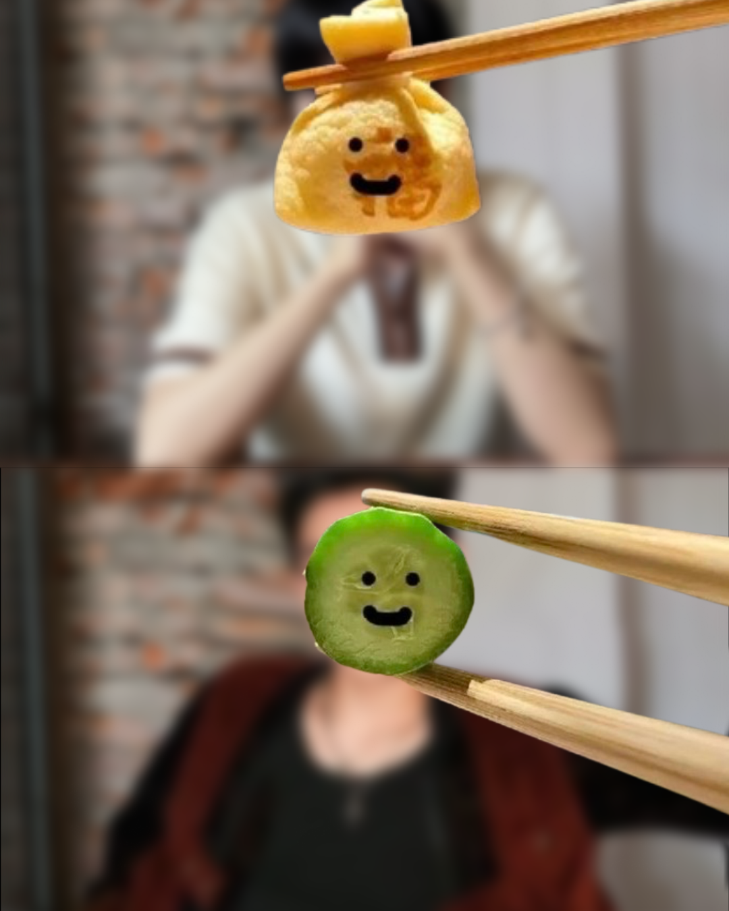

Sebenarnya aku bingung harus mulai dari mana. Kenalin, aku Kaiden Einstein.
Aku bukan tipe orang yang jago ngomong langsung, jadi aku tulisin semuanya di sini. Anggap aja ini catatan kecil yang akhirnya berani aku tunjukkin ke kamu.
Boleh luangin waktu kamu sebentar buat baca?
🎀
Personal Log
Mungkin kamu liat aku sebagai orang yang sibuk dengan rutinitas harian yang itu-itu aja. Tapi jujur, di tengah semua kebisingan itu, aku sering curi-curi waktu buat melamun di bawah langit malam. Aku sering bertanya-tanya tentang banyak hal, termasuk tentang gimana sebuah pertemuan bisa terasa begitu berarti. Hari ini, aku cuma ingin jujur sama diri sendiri—dan sama kamu.
🧸
A Piece of Memory
Aku masih inget pertama kali kita ngobrol. Awalnya kupikir bakal jadi obrolan lewat gitu aja, tapi ternyata salah.
First encounter — April, 2026
"tau ga apa bedanya kamu sama lumut?"
"WKWK gatauu nihh, apatuhh bedanyaa??"
"kalau lumut warna ijo, kalau kamu i jodohku."
Ngobrol sama kamu itu rasanya tenang, kayak nyium aroma tanah sehabis hujan—Petrichor. Setiap pesan dari kamu selalu sukses bikin hariku jadi sedikit lebih cerah.
🍰
Something About You
Kalau ada yang tanya kenapa aku begitu mengagumi kamu, jawabannya sederhana: karena kamu adalah kamu. Caramu melihat hal-hal kecil dan caramu memperlakukan aku itu berharga banget.
"Sumpah ya malam ini kayaknya bintang-bintang lagi bersinar terang deh, kalaupun ketutup awan menurut aku tetap bakal bersinar. Kayak kamu yang selalu bersinar di mata akuu."
Setiap kali aku liat langit malam, aku selalu ingat kata-kata itu. Bagiku, kamu itu Amerta—sesuatu yang engga akan pudar maknanya di ingatanku.
🤍
A Little Secret...
Maybe you're wondering, kenapa harus kamu?
Honestly, it’s not about just one big thing, but many little things. Aku suka gimana caramu treat orang lain, aku suka gimana kita bisa nyambung pas ngobrolin hal random.
You make the world feel a bit less chaotic. It's always been you, Yoshiro.
Chapter IV: Us

"Capturing every moment with you ♡"
🌸
The Final Page
Yoshiro Akio, intinya aku cuma mau bilang kalau aku merasa nyaman ada di dekatmu. Rasanya kayak nemu 'rumah'.
Jadi, bolehkah aku jadi orang yang nemenin hari-harimu ke depannya?